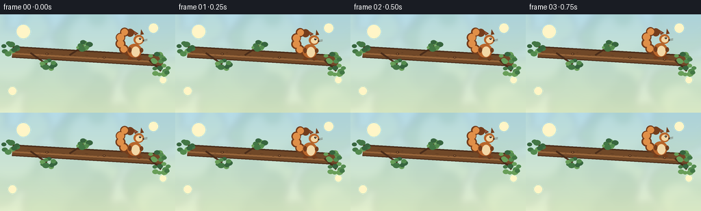
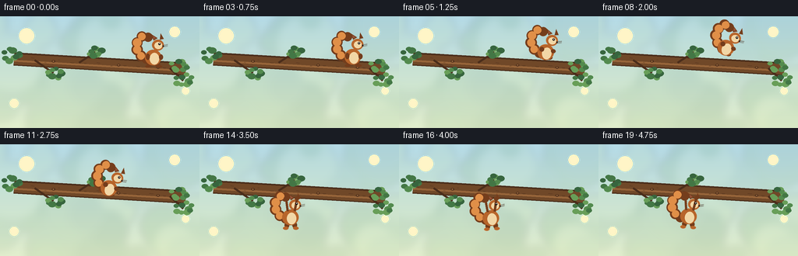

CODING AGENTS AS PIXEL WORLD MODELS
traex/Seed-2.1-Pro-0915 · dynamic_spatial_relationship_0022
点击播放 · 原生 RGB 像素
逐轮保存的候选
回放视频、检查图与代码变化。
每份候选均可单独播放。实际图片检查记录在下方工具轨迹中。
候选 01播放与检查图
点击播放 · 原生 RGB 像素


展开代码变化
--- 上一保存版本
+++ 本次保存版本
@@ -0,0 +1,245 @@
+"""Procedural text-to-video generation for the squirrel/branch prompt.
+
+The scene is rendered entirely with PIL and NumPy. Each frame is drawn at
+three times the output resolution and downsampled for smoother silhouettes.
+"""
+
+from pathlib import Path
+import math
+
+import numpy as np
+from PIL import Image, ImageDraw, ImageFilter
+
+import artifact_io
+
+
+W, H = 256, 144
+N_FRAMES = 20
+SS = 3 # supersampling factor
+
+FUR = (183, 101, 43)
+FUR_DARK = (116, 61, 28)
+FUR_LIGHT = (224, 143, 72)
+CREAM = (242, 215, 166)
+BLACK = (35, 27, 22)
+BRANCH = (112, 72, 40)
+BRANCH_DARK = (74, 45, 27)
+BRANCH_LIGHT = (151, 101, 58)
+
+
+def make_background():
+ """Soft sky/canopy gradient with distant out-of-focus foliage."""
+ top = np.array([181, 219, 231], dtype=np.float32)
+ bottom = np.array([226, 239, 205], dtype=np.float32)
+ blend = np.linspace(0.0, 1.0, H * SS, dtype=np.float32)[:, None]
+ grad = top[None, :] * (1.0 - blend[:, :, None]) + bottom[None, :] * blend[:, :, None]
+ img = Image.fromarray(np.repeat(grad, W * SS, axis=0).reshape(H * SS, W * SS, 3).astype(np.uint8), "RGB")
+
+ overlay = Image.new("RGBA", img.size, (0, 0, 0, 0))
+ d = ImageDraw.Draw(overlay)
+ rng = np.random.default_rng(7)
+ foliage = [(86, 132, 83), (105, 151, 93), (70, 116, 75), (190, 211, 145)]
+ for _ in range(34):
+ x = int(rng.integers(-30, W * SS + 30))
+ y = int(rng.integers(-15, H * SS + 25))
+ r = int(rng.integers(12, 38)) * SS
+ color = foliage[int(rng.integers(0, len(foliage)))]
+ alpha = int(rng.integers(18, 42))
+ d.ellipse((x - r, y - r, x + r, y + r), fill=(*color, alpha))
+ overlay = overlay.filter(ImageFilter.GaussianBlur(5 * SS))
+ img = Image.alpha_composite(img.convert("RGBA"), overlay)
+
+ # A few small warm highlights give the background depth without competing
+ # with the main action.
+ d = ImageDraw.Draw(img)
+ for x, y, r in [(34, 25, 10), (224, 20, 7), (238, 96, 5), (18, 112, 6)]:
+ X, Y, R = x * SS, y * SS, r * SS
+ d.ellipse((X - R, Y - R, X + R, Y + R), fill=(255, 246, 198, 55))
+ return img
+
+
+def leaf_cluster(d, x, y, s, rng):
+ greens = [(67, 119, 69), (83, 139, 78), (104, 158, 88), (55, 101, 62)]
+ for i in range(9):
+ ang = i * 2.399 + rng.random() * 0.35
+ dist = (5 + rng.random() * 7) * s
+ lx = x + math.cos(ang) * dist
+ ly = y + math.sin(ang) * dist * 0.72
+ r = (3.2 + rng.random() * 2.0) * s
+ color = greens[int(rng.integers(0, len(greens)))]
+ d.ellipse((lx - r, ly - r * 0.75, lx + r, ly + r * 0.75), fill=color)
+
+
+def draw_branch(base):
+ img = base.copy()
+ d = ImageDraw.Draw(img)
+ rng = np.random.default_rng(11)
+
+ # Main branch runs across the frame; the squirrel starts over its right
+ # section and finishes beneath the middle.
+ p0 = np.array([18.0, 55.0])
+ p1 = np.array([238.0, 68.0])
+ direction = p1 - p0
+ direction = direction / np.linalg.norm(direction)
+ normal = np.array([-direction[1], direction[0]])
+ width = 8.5 * SS
+
+ quad = [
+ tuple((p0 + normal * width / SS) * SS),
+ tuple((p1 + normal * width / SS) * SS),
+ tuple((p1 - normal * width / SS) * SS),
+ tuple((p0 - normal * width / SS) * SS),
+ ]
+ d.polygon(quad, fill=BRANCH_DARK)
+ d.line([tuple(p0 * SS), tuple(p1 * SS)], fill=BRANCH, width=int(width * 1.65), joint="curve")
+ d.line([tuple((p0 + normal * 2.2) * SS), tuple((p1 + normal * 2.2) * SS)],
+ fill=BRANCH_LIGHT, width=max(2, int(width * 0.35)))
+
+ # Bark marks and small knots.
+ for i in range(13):
+ t = (i + 0.4) / 13
+ p = p0 * (1 - t) + p1 * t
+ along = direction * rng.uniform(2.0, 6.0) * SS
+ across = normal * rng.uniform(-3.0, 3.0) * SS
+ q = p * SS
+ d.line([tuple(q - along * 0.45 + across), tuple(q + along * 0.45 + across)],
+ fill=BRANCH_DARK, width=max(1, SS // 2))
+ for t in (0.23, 0.61, 0.84):
+ p = p0 * (1 - t) + p1 * t
+ x, y = p * SS
+ r = 2.1 * SS
+ d.ellipse((x - r, y - r * 0.7, x + r, y + r * 0.7), fill=BRANCH_DARK)
+ d.ellipse((x - r * 0.45, y - r * 0.35, x + r * 0.45, y + r * 0.35), fill=BRANCH_LIGHT)
+
+ # Side twigs and leaf clusters.
+ for start_t, side, length in [(0.12, 1, 25), (0.38, -1, 20), (0.91, 1, 18)]:
+ start = p0 * (1 - start_t) + p1 * start_t
+ end = start + direction * length + normal * side * 15
+ d.line([tuple(start * SS), tuple(end * SS)], fill=BRANCH_DARK, width=3 * SS)
+ leaf_cluster(d, end[0] * SS, end[1] * SS, SS, rng)
+ leaf_cluster(d, 15 * SS, 50 * SS, SS * 1.05, rng)
+ leaf_cluster(d, 231 * SS, 63 * SS, SS * 0.95, rng)
+ return img
+
+
+def draw_squirrel(base, x, y, scale, angle, pose, tail_sway):
+ """Draw the squirrel centered at x,y in output coordinates, then rotate."""
+ layer = Image.new("RGBA", (W * SS, H * SS), (0, 0, 0, 0))
+ d = ImageDraw.Draw(layer)
+ s = SS * scale
+ cx, cy = x * SS, y * SS
+
+ def box(x0, y0, x1, y1):
+ return (cx + x0 * s, cy + y0 * s, cx + x1 * s, cy + y1 * s)
+
+ # Bushy tail: overlapping dark-edged circles along a curled curve.
+ tail_pts = [(-8, 5), (-15, 1), (-20, -7), (-20, -16), (-14, -24), (-6, -23)]
+ for i, (tx, ty) in enumerate(tail_pts):
+ tx += tail_sway * (1.0 - i / len(tail_pts))
+ r = (7.4 - abs(i - 2.2) * 0.55) * s
+ d.ellipse(box(tx - r / s, ty - r / s, tx + r / s, ty + r / s), fill=FUR_DARK)
+ for i, (tx, ty) in enumerate(tail_pts[1:-1]):
+ tx += tail_sway * 0.75
+ r = (5.5 - abs(i - 1.7) * 0.45) * s
+ d.ellipse(box(tx - r / s, ty - r / s, tx + r / s, ty + r / s), fill=FUR_LIGHT)
+
+ # Hind legs and feet change noticeably between perch, flight, and hang.
+ if pose == "jump":
+ d.ellipse(box(-8, 5, -1, 12), fill=FUR_DARK)
+ d.ellipse(box(3, 6, 10, 12), fill=FUR_DARK)
+ elif pose == "hang":
+ d.ellipse(box(-7, 9, -1, 17), fill=FUR_DARK)
+ d.ellipse(box(3, 9, 9, 17), fill=FUR_DARK)
+ d.ellipse(box(-9, 15, -2, 19), fill=FUR)
+ d.ellipse(box(4, 15, 11, 19), fill=FUR)
+ else:
+ d.ellipse(box(-8, 7, -2, 15), fill=FUR_DARK)
+ d.ellipse(box(3, 7, 9, 15), fill=FUR_DARK)
+ d.ellipse(box(-10, 13, -2, 16), fill=FUR_DARK)
+ d.ellipse(box(4, 13, 12, 16), fill=FUR_DARK)
+
+ # Body, cream belly, and head.
+ d.ellipse(box(-10, -7, 11, 13), fill=FUR)
+ d.ellipse(box(-4, -3, 8, 12), fill=CREAM)
+ d.ellipse(box(-1, -20, 14, -6), fill=FUR)
+ d.ellipse(box(2, -17, 12, -8), fill=CREAM)
+
+ # Rounded ears with darker inner fur.
+ d.polygon([box(1, -19, 1, -19)[0:2], box(-2, -27, -2, -27)[0:2],
+ box(6, -22, 6, -22)[0:2]], fill=FUR_DARK)
+ d.polygon([box(9, -20, 9, -20)[0:2], box(10, -28, 10, -28)[0:2],
+ box(14, -21, 14, -21)[0:2]], fill=FUR_DARK)
+ d.polygon([box(1, -21, 1, -21)[0:2], box(0, -25, 0, -25)[0:2],
+ box(4, -22, 4, -22)[0:2]], fill=(151, 84, 59))
+
+ # Arms: raised while clinging, tucked in flight, relaxed while perched.
+ if pose == "hang":
+ d.line(box(-3, -5, -5, -21)[0:2] + box(-5, -21, -5, -21)[2:4], fill=FUR_DARK, width=3 * SS)
+ d.line(box(6, -5, 9, -21)[0:2] + box(9, -21, 9, -21)[2:4], fill=FUR_DARK, width=3 * SS)
+ d.ellipse(box(-8, -24, -2, -19), fill=FUR_DARK)
+ d.ellipse(box(6, -24, 12, -19), fill=FUR_DARK)
+ elif pose == "jump":
+ d.ellipse(box(-8, -3, -2, 3), fill=FUR_DARK)
+ d.ellipse(box(7, -2, 13, 3), fill=FUR_DARK)
+ else:
+ d.ellipse(box(-9, -2, -4, 6), fill=FUR_DARK)
+ d.ellipse(box(8, -1, 13, 6), fill=FUR_DARK)
+
+ # Face, nose, and delicate whiskers.
+ d.ellipse(box(7, -16, 10, -13), fill=BLACK)
+ d.ellipse(box(8, -15.5, 9, -14.5), fill=(255, 255, 255))
+ d.ellipse(box(12.4, -12.3, 14.4, -10.7), fill=BLACK)
+ for yy in (-12.5, -11.3, -10.1):
+ d.line(box(12, yy, 19, yy - 1.4)[0:2] + box(19, yy - 1.4, 19, yy - 1.4)[2:4],
+ fill=(80, 62, 49), width=max(1, SS // 3))
+
+ if angle:
+ layer = layer.rotate(angle, resample=Image.Resampling.BICUBIC, center=(cx, cy))
+ return Image.alpha_composite(base, layer)
+
+
+def squirrel_transform(frame):
+ """Return position, rotation, pose, crouch, and tail motion per frame."""
+ start = np.array([196.0, 50.0])
+ end = np.array([116.0, 91.0])
+ tail = math.sin(frame * 0.9) * 1.8
+
+ if frame <= 3:
+ x, y = start
+ y += math.sin(frame * math.pi / 2) * 0.7
+ return x, y, 1.0, 0.0, "perch", tail
+ if frame == 4:
+ return start[0], start[1] + 3.0, 0.96, 0.0, "perch", tail
+ if frame <= 14:
+ t = (frame - 4) / 10.0
+ x = start[0] * (1 - t) + end[0] * t
+ y = start[1] * (1 - t) + end[1] * t - 30.0 * 4.0 * t * (1 - t)
+ angle = -24.0 * math.sin(math.pi * t)
+ pose = "hang" if frame == 14 else "jump"
+ return x, y, 1.0, angle, pose, tail + 2.5
+
+ settle = (frame - 15) / 5.0
+ x = end[0] + math.sin(frame * 1.25) * 1.4 * (1.0 - settle * 0.5)
+ y = end[1] + math.sin(frame * 1.25) * 1.1
+ angle = math.sin(frame * 1.25) * 4.0
+ return x, y, 1.0, angle, "hang", tail
+
+
+def render_frame(frame, background):
+ x, y, scale, angle, pose, tail = squirrel_transform(frame)
+ img = draw_branch(background)
+ img = draw_squirrel(img, x, y, scale, angle, pose, tail)
+ img = img.resize((W, H), Image.Resampling.LANCZOS).convert("RGB")
+ return np.asarray(img, dtype=np.uint8)
+
+
+def main():
+ case_dir = Path(__file__).parent
+ background = make_background()
+ frames = [render_frame(i, background) for i in range(N_FRAMES)]
+ artifact_io.save(frames, case_dir)
+ print(f"Saved {len(frames)} RGB frames ({W}x{H}) to {case_dir}")
+
+
+if __name__ == "__main__":
+ main()
候选 02播放与检查图
点击播放 · 原生 RGB 像素

展开代码变化
--- 上一保存版本
+++ 本次保存版本
@@ -33,7 +33,8 @@
bottom = np.array([226, 239, 205], dtype=np.float32)
blend = np.linspace(0.0, 1.0, H * SS, dtype=np.float32)[:, None]
grad = top[None, :] * (1.0 - blend[:, :, None]) + bottom[None, :] * blend[:, :, None]
- img = Image.fromarray(np.repeat(grad, W * SS, axis=0).reshape(H * SS, W * SS, 3).astype(np.uint8), "RGB")
+ pixels = np.repeat(grad, W * SS, axis=0).reshape(H * SS, W * SS, 3).astype(np.uint8)
+ img = Image.fromarray(pixels)
overlay = Image.new("RGBA", img.size, (0, 0, 0, 0))
d = ImageDraw.Draw(overlay)
可观测工具轨迹
实际执行的命令与返回图片。
命令 1exit 0
/bin/bash -lc 'cat prompt.txt GENERATION_RULES.json task_spec.json 2>/dev/null || ls -la'
命令 2exit 0
/bin/bash -lc 'cat GENERATION_RULES.md; cat artifact_io.py'
命令 3exit 0
/bin/bash -lc 'cd . && python generate.py && ls -la && ls frames | head'
命令 4exit 0
/bin/bash -lc "cd . && python - <<'EOF'
import numpy as np
from PIL import Image
for i in range(20):
a = np.asarray(Image.open(f\"frames/{i:02d}.png\").convert(\"RGB\")).astype(int)
r,g,b = a[...,0],a[...,1],a[...,2]
fur = (r>140)&(r<235)&(g>60)&(g<170)&(b<110)&(r-g>40)&(g-b>15)
ys,xs = np.nonzero(fur)
cx,cy = xs.mean(), ys.mean()
# branch center at x is roughly y = 55 + (x-18)*13/220
by = 55 + (cx-18)*13/220
rel = \"right/above\" if cx>150 and cy<by else (\"below\" if cy>by+12 else \"mid\")
print(f\"f{i:02d} n={fur.sum():4d} centroid=({cx:5.1f},{cy:5.1f}) branch_y={by:5.1f} {rel}\")
EOF"命令 5exit 1
/bin/bash -lc "cd . && python - <<'EOF'
import numpy as np
from PIL import Image
chars = \" .:-=+*#%@\"
for fi in (0, 9, 19):
a = np.asarray(Image.open(f\"frames/{fi:02d}.png\").convert(\"L\"))
small = np.asarray(Image.fromarray(a).resize((64, 24)))
print(f\"--- frame {fi} ---\")
for row in small:
print(\"\".join(chars[min(9, v*10//256)] for v in row))
EOF"命令 6exit 0
/bin/bash -lc "cd . && python - <<'EOF'
import numpy as np
from PIL import Image
chars = \" .:-=+*#%@\"
for fi in (0, 9, 19):
a = np.asarray(Image.open(f\"frames/{fi:02d}.png\").convert(\"L\"), dtype=np.int16)
small = np.asarray(Image.fromarray(a.astype(np.uint8)).resize((64, 24)))
print(f\"--- frame {fi} ---\")
for row in small:
print(\"\".join(chars[min(9, int(v)*10//256)] for v in row))
EOF"命令 7exit 0
/bin/bash -lc "cd . && python generate.py && python - <<'EOF'
import numpy as np
from pathlib import Path
data = np.load(\"pixels.npz\")[\"pixels\"]
print(\"packed shape:\", data.shape, \"dtype:\", data.dtype)
assert data.shape == (144, 256, 20)
assert len(list(Path(\"frames\").glob(\"*.png\"))) == 20
for name in (\"index.html\", \"inspection.png\", \"transition_check.png\", \"pixels.npz\"):
p = Path(name)
print(name, p.exists(), p.stat().st_size)
EOF"保存候选 2 份；完成命令 7 次；可验证图片返回 0 张。原始 API 响应与完整日志保留在本地。